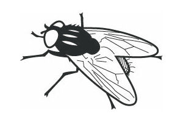

Man skulle næsten tro, at fluer var udstyret med en mission om at irritere mennesker mest muligt. Specielt i varme og tørre områder er fluerne særdeles aggressive. Forklaringen er, at [ ] er et rent spisekammer for fluerne. De får deres behov for næring dækket gennem de næringsstoffer, mineraler og ikke mindst væde, som vi har på vores hud, og jo mere vi [ ], jo mere tiltrækker vi fluerne.
Voksne fluer lever af forskellige former for [ ] føde, som de suger op med deres sugesnabel, der består af et sugerør med en biologisk udgave af en rengøringssvamp i enden. Ved hjælp af denne særlige konstruktion kan de tørre væsker op fra overflader, som kun er ganske lidt fugtige.
I første omgang tiltrækkes fluerne af, at [ ] som regel er varmere end omgivelserne. [ ] de samtidig kan smage med fødderne, opfatter de lynhurtigt efter landingen, om de befinder sig på en næringsrig overflade. Jo mere væskefyldt fladen er, jo bedre. Derfor går fluerne altid målrettet efter de [ ] områder på kroppen, fx spyttet i mundvigene og fugtigheden i øjenkrogene.
